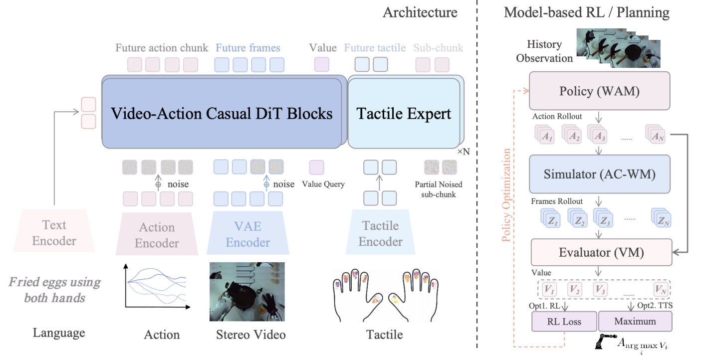
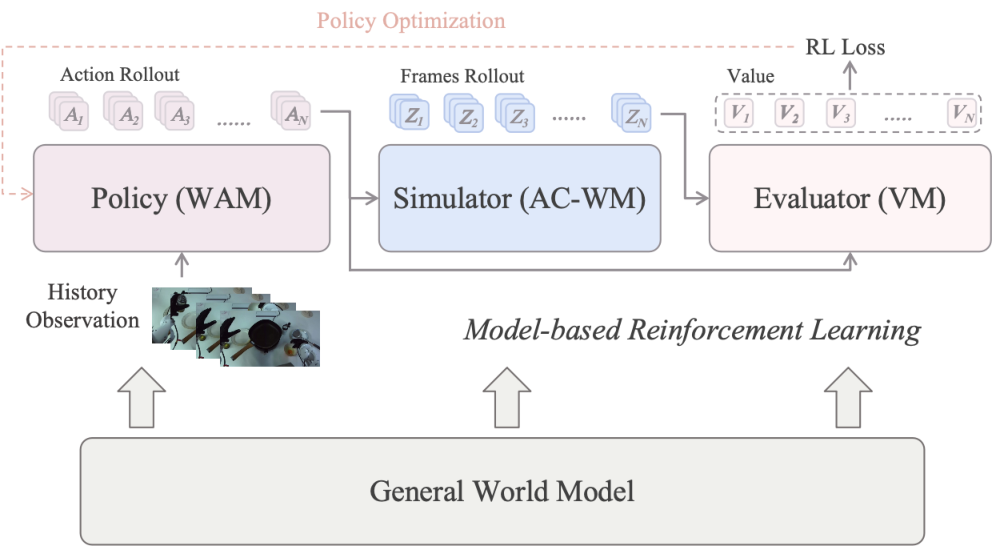
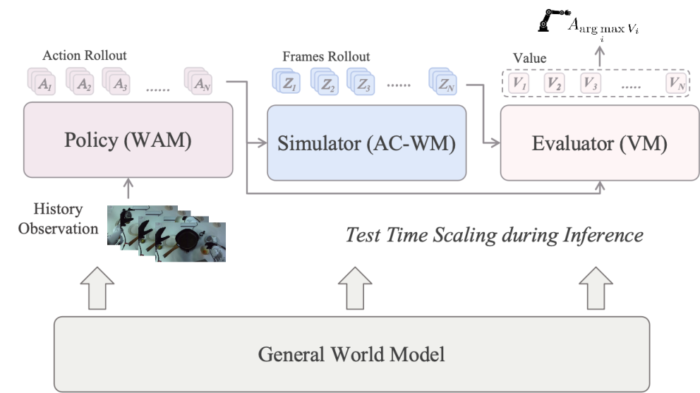

World ModelMBRLBest-of-N PlanningDiffusion PolicyDexterous ManipulationTactile
제출: 2026-08-31 · 이족 로봇 + 스테레오 비전 + 양손 dexterous hand + 촉각
한 줄 요약 (TL;DR)
한 세트의 파라미터로 세 역할(정책·시뮬레이터·평가자)을 동시에 하는 world model이 스스로 rollout·평가·정책 업데이트를 도는 self-evolving 폐루프. 스테레오 에고 영상 대규모 사전학습으로 dexterous 5개 태스크 평균 성공률을 0% → 51% → 84%(WAN-SFT → Pretrain-SFT → Mid-train)로 끌어올리고, 여기에 Best-of-N 계획 + DiffusionNFT MBRL을 얹으면 2개 태스크 평균 65 → 75%. 촉각을 붙이면 접촉 태스크 60 → 72.5%. 스테레오 인간 영상 스케일링 곡선까지 실증(ℒ_val ≈ 0.101 − 0.005·ln D).
1배경 · 문제의식
세대의 로봇 시스템은 정책(policy), 월드 시뮬레이터(dynamics), 가치 평가자(value)를 각기 다른 모델로 두고 조합한다. 이러면 정책과 시뮬레이터의 표현이 어긋나 MBRL(model-based RL, 모델 기반 강화학습)의 신호 노이즈가 커지고, 자기 데이터로 이어붙여 학습하는 self-evolution도 불안정하다. Motus2는 "세 역할을 하나의 shared-parameter 모델로 통합하되, 학습 stage마다 어떤 정보가 어디로 흐를 수 있는지 attention mask로 통제"해 이 문제를 푼다.
직관: 정책·시뮬레이터·평가자를 별도 모델로 두는 것은 "저자 셋이 각자 다른 초고를 쓰는" 격이라 정보가 어긋난다. Motus2는 "한 저자가 세 관점을 번갈아 쓰되, stage마다 볼 수 있는 자료를 다르게 통제"한다.
2핵심 Contribution
Shared-parameter general world model — 하나의 모델이 πθ(A|c)(정책) · pθwm(Z|c,A)(시뮬레이터) · pθvm(Y|c,A,Z)(평가자)로 factorize돼 세 인터페이스를 노출. c는 관찰·언어 컨텍스트, A는 액션 chunk, Z는 미래 관찰, Y는 가치 스칼라.
Stage별 attention mask + 3-mode 감독 라우팅 — 사전학습은 양방향, 로봇 mid-training은 action-first mask(액션은 미래 관찰을 못 보고, 미래 관찰은 액션을 봄, value는 둘 다 봄)로 정보 누출(shortcut) 차단. 성공 trajectory는 정책·시뮬 모두, 실패는 시뮬·평가만 감독하는 라우팅.
Self-evolving MBRL 루프 — 진행도 기반 value 학습 + Best-of-N 계획 + DiffusionNFT(Diffusion-Noise Flow-matching Training) policy update + Ray 기반 비동기 파이프라인. 5-task 평균 84% 위에 계획·MBRL로 +10%p 추가 확보.
스테레오 에고 인간 영상 스케일링 법칙 실증 — 2k∼20k시간 데이터에서 ℒ_val ≈ 0.101 − 0.005·ln D(D=시간)의 log-linear 스케일.
3Method
세 역할, 한 모델 — 확률 분해
결합 확률을 pθ(At, Zt, Yt | ct) = πθ(At|ct) · pθwm(Zt|ct,At) · pθvm(Yt|ct,At,Zt)로 인수분해. 기호 의미:
ct: 현재 관찰(스테레오 이미지 + 로봇 상태) + 언어 지시 + 시각 working memory(과거 프레임).
At: 이 시점에서 실행할 action chunk(여러 스텝의 목표 동작).
Zt: 그 액션을 실행했을 때 예상되는 미래 관찰(비디오 형태).
Yt: 그 미래에 대해 매기는 task-progress 점수.
세 항이 모두 같은 트랜스포머 파라미터를 공유하되, forward 시 어떤 토큰을 넣고 어떤 mask를 쓰느냐로 세 역할을 스위치한다.
Stage별 chunk mask (그림 2)
Pre-training — Joint mask: 비디오와 액션 토큰이 양방향으로 서로 참조. 대규모 에고 영상 사전학습에서 표현을 넓게 잡기 위함.
Mid/post-training — Action-first mask: 액션은 미래 비디오를 보지 못하고(=미래 누출 차단), 미래 비디오는 액션을 볼 수 있고, value는 액션·비디오를 모두 본다. 즉 실제 배포 조건과 동일한 causality를 강제.
직관: 사전학습에서는 "가능한 모든 상관관계"를 배우게 두고, 실전 준비 단계에서는 "미래는 못 보고 과거만 보고 결정" 하는 실행 시점의 규칙을 강제해 정책이 미래 정보를 훔쳐보는 shortcut을 원천 차단.
Trajectory-dependent supervision routing
학습 데이터에서 성공/실패/미완을 구분해 supervise 대상을 나눈다:
Policy mode(성공): 액션과 미래 영상을 동시에 supervise(정답 demo를 imitate).
Simulation mode(모든 trajectory): 액션 조건부 비디오 예측만 supervise(실패 포함 → dynamics 관측 다양성 확보). 정책 imitation에 실패 데이터가 새어들지 않게 액션은 clean 유지.
Evaluation mode(성공/실패 모두): value readout만 supervise(진행도·이탈도 모두 학습).
Progress-based value + DiffusionNFT policy update
Value 목표: 성공 segment는 rt = Δt/(T−t)(Δt=세그먼트 길이, T=전체 trajectory 길이 — 남은 시간 대비 얼마나 진행됐는지). 실패는 −Δt/(T−t)로 벌칙.
Best-of-N 계획: 현재 관찰에서 N개 action 후보를 정책으로 뽑고, 각각을 시뮬레이터로 rollout, evaluator로 점수, 가장 높은 chunk를 실행 후 real 관찰이 오면 다시 계획(receding-horizon).
DiffusionNFT(Noise Flow-matching Training): evaluator 점수 r̂i를 후보들의 평균·표준편차로 정규화한 가중치로 삼아, 참조 정책 주변의 positive velocity field v+(좋은 방향)와 negative v−(나쁜 방향)을 만들고 다음 loss로 학습:
ℒNFT = 𝔼i[ r̂i ‖vi+ − vitar‖² + (1−r̂i) ‖vi− − vitar‖² ] → 좋은 후보는 policy target을 positive field 쪽으로, 나쁜 후보는 negative field 쪽으로 밀어낸다. 즉 diffusion policy 위에 얹은 가치 가중치 학습 규칙.
비동기 MBRL 파이프라인
Ray 기반의 매크로 비동기 파이프라인: rollout 생성 → value 스코어링 → reference 정책 구성 → policy 업데이트를 bounded FIFO 버퍼로 분리해 throughput 극대화.
데이터 피라미드 (그림 4)
Web / 단안 영상
가장 넓은 저층 — 언어·시각 일반 지식
스테레오 에고
중층 — 3D depth·양안 시차·손 조작 관측
로봇·인간 정렬
상층 — 정확한 액션·촉각까지
99가지 동작 동사, 다양한 물체·12개 태스크 카테고리·씬 컨텍스트로 semantic diversity 확보.
4실험 결과
5-task dexterous 태스크 (표 2)
모델
Place Ball
Multi-Finger
Attach Eraser
Screw Bulb
Put Phone
Avg SR
WAN-SFT (사전학습 없음)
0%
0%
0%
0%
0%
0%
Pretrain-SFT (에고 영상 pretrain)
60%
35%
90%
55%
15%
51%
Motus2 (Midtrain-SFT)
100%
70%
100%
90%
60%
84%
에고센트릭 사전학습이 +51%p, 로봇 도메인 mid-training이 +33%p 기여. 사전학습 없는 WAN(SFT)은 0%로 dexterous가 처음부터 불가능함을 보여줌.
스테레오 에고 데이터 스케일링 법칙
2k–20k 시간 서브셋에서 ℒ_val*(D) ≈ 0.101 − 0.005 · ln D — 로그-선형으로 검증 오차가 감소. 스테레오 인간 영상 데이터가 계속 늘어나면 성능 이득이 예측 가능한 형태로 이어짐을 시사.
MBRL·계획 효과 (표 3, 2-task)
방식
Put Phone
Multi-Finger
Avg SR
Motus2 (계획·MBRL 없음)
60%
70%
65.0%
+ Best-of-N Planning
65%
70%
67.5%
+ MBRL (DiffusionNFT)
65%
80%
72.5%
+ MBRL + Planning
70%
80%
75.0%
계획 단독 +2.5%p, MBRL 단독 +7.5%p, 함께 +10%p. self-evolving 루프가 실제로 정책을 개선.
Long-horizon 기억 (표 4)
세팅
Global autoregression
Hybrid memory
시뮬 평균
78%
52%
실 로봇 평균
57.5%
25.0%
Long-horizon에서는 hybrid memory 대신 global autoregression이 압도적. 실 로봇에서 격차가 특히 큼(+32.5%p).
촉각 (표 5)
변형
Pull Out Paper Cup
Tear Paper
Avg SR
w/o Tactile
65%
55%
60.0%
w/ Tactile
75%
70%
72.5%
접촉이 중요한 두 태스크에서 촉각 expert 추가로 +12.5%p.
5Ablation (주요 발견)
사전학습이 dexterous의 시작 조건: 사전학습 없는 WAN-SFT는 5-task 전부 0% — dexterous manipulation은 사전학습 없이는 imitation만으로 아예 안 된다는 강한 증거.
Mid-training + action-first mask: pretrain-SFT의 51%에서 84%로 +33%p. 정보 누출 없는 causal mask가 실제로 downstream 정책 학습에 이득.
MBRL vs 계획: 계획은 배포 시점의 이득(모델을 온라인으로 활용), MBRL은 policy 자체를 개선. 두 이득이 중첩 가능(2.5 + 7.5 ≈ 10.0).
Long-horizon 메모리: hybrid memory보다 global autoregressive이 훨씬 안정. 특히 실 로봇에서 25 vs 57.5로 격차 극단.
6핵심 Figure / Table

Figure 1 — Motus2 Overview. 하나의 공유 파라미터 general world model이 세 인터페이스(policy·simulator·evaluator)를 노출. policy는 언어·관찰·시각 working memory에서 action chunk를, simulator는 후보 액션 하의 미래 visual state를, evaluator는 그 결과 branch를 평가해 계획·정책 최적화에 활용. (출처: arXiv:2608.30237)

Figure 3(a) — MBRL 학습 루프. policy·simulator·evaluator가 하나의 shared 파라미터 안에서 서로를 참조하며 rollout→평가→DiffusionNFT 업데이트를 도는 self-evolving 폐루프. (출처: arXiv:2608.30237)

Figure 3(b) — Test-time Best-of-N 계획. 실행 시점마다 N개 후보를 simulator로 rollout, evaluator로 점수, 최고점 chunk 실행 후 다음 관찰이 오면 재계획하는 receding-horizon 방식. (출처: arXiv:2608.30237)
표 2(5-task 성공률)이 논문의 skeleton evidence — WAN-SFT 0%가 dexterous의 필수 요건으로 대규모 사전학습을 증명하고, mid-training(84%)과 최종 MBRL+Planning(75% on 2-task subset)이 두 layer로 이득을 쌓는다.